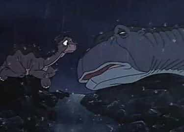
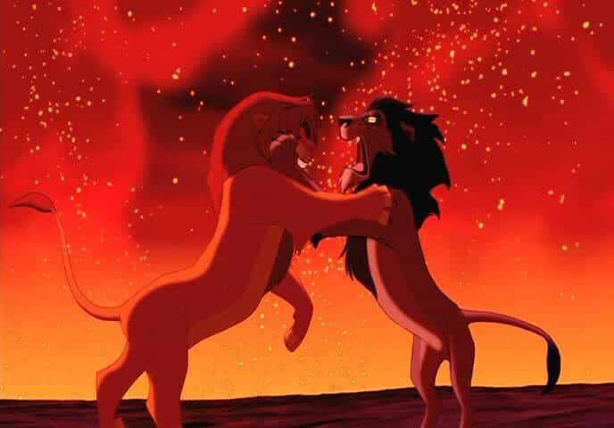
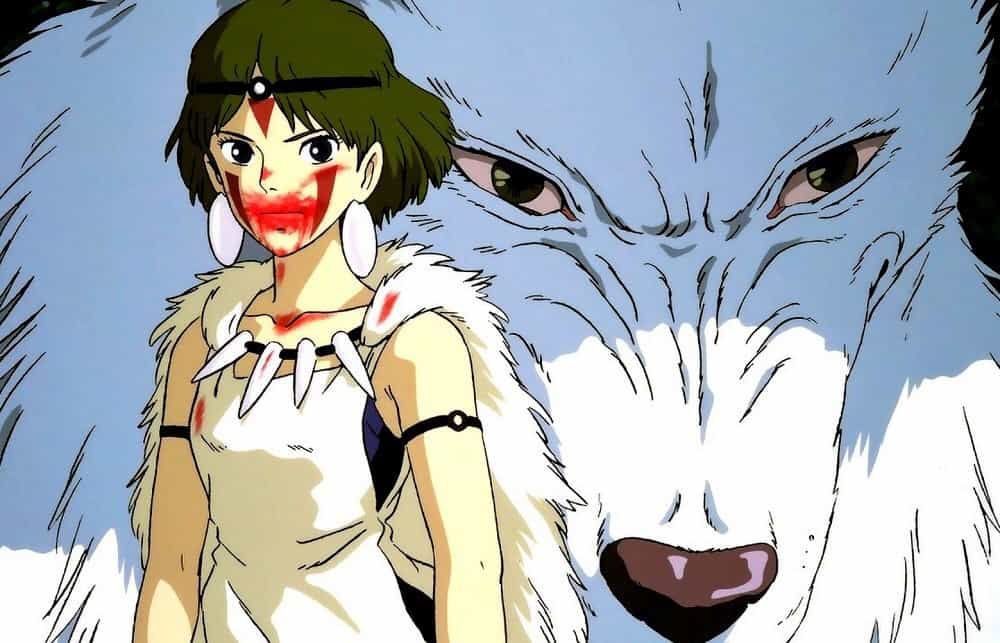

Edgar Tru is a Southern-based objectivist, natural-minded contrarian, and eleutheromania. Follow me on Gab.


Recently, I had a good chat with a comrade about our childhood films. Now, I’m not familiar with what children have for entertainment these days, but I can speak on the things my childhood-era films had to teach me about life. Even if at the time I wasn’t consciously aware of their potential meanings and real-life reflections.

This film, directed by Donald Virgil Bluth, tells the tale of a tragic event where the earth splits in two as chaos erodes the planet and a longneck, named Littlefoot, is separated from his family. The film is rather dark and paints a horrifying image of childhood trauma through means of family separation, environmental catastrophe and death.
This film teaches the lesson that death is part of life. The protagonist, Littlefoot, is playing with a friend, Sarah, when a T-rex (a.k.a Sharptooth) attacks. The mother of Littlefoot eventually makes way to defend her young with a look of fury only a mother can conjure when her young is threatened.
The fight scene ends after Littlefoot lays bare witness to the beast jump upon his mother’s back and rip a chunk of her flesh off, as can be seen via shadow on the wall. That’s fucked up.
Later, when the earth begins to split, Littlefoot is separated from his grandparents and mother. He finds his mother, in the middle of night, lying half-dead, in the rain. He watches, face to face, his own mother die. In the rain. That does not paint this happy-go-lucky world but one of war, natural tragedies and fighting between different races. Longnecks simply do not walk the same route as the carnivore. And, as real-life demonstrates, the ignorant savage always wins over the intelligent and developed if they’re not protected by a wall, hence The Great Valley.

This film displays the horror of dishonoring one’s own family, or tribe for favors as they ally with outsiders. The ending, where Simba and Scar face off in that epic slow-motion collide of alpha, is just epic.
It relates well to the perpetuated anti-white politics by actual European-Americans toward their own tribe as they actively preach against their own kind in favor of an outside group. Scar, in this case, murdered his own brother and allied against his own clan while the hyenas took place over them, and all for means of power.
The more low-life, less intelligent, less noble beasts were granted authority over the majestic, powerful and beauty of the lion clan. It is made clear, in this film, that hyenas and lions simply do not mix. One group resides in the Pride Lands, while the others lay in piss and rot in the Elephant Graveyard.

Now, I did not discover this masterpiece, directed by the very skilled and talented Hayao Miyazaki, until I was older. This film can easily be geared toward a more mature audience, but it certainly provides commentary on our contemporary state of politics.
The two sides at odds with one another are man and the beast of the forest. The expansion of man upon Nature and the gods of the forest, and the beast which reside within Nature’s trees, tackles the issue of man’s destructive nature in favor of capitalism, corporatism, and consumerism. This has an environmental factor to it. However, what is interesting is that it displays how no side is either villain nor hero. Each side has their own struggle and cause.
It demonstrates how it may seem one is the villain, such as the character of Lady Eboshi. This female antagonist means to expand her enterprise for riches. By her desire for expansion she is both responsible for turning a beast of the forest into a demon and causing harm to the forest. At the same time, she cares for her tribe and looks after the weaker ones whilst finding a place of production and constructive garnering toward capital. On the front, she may seem, in layman’s terms, a villain; yet, on the flip side behind the curtain, lies a leader who fights for her people and cares for their protection.
Then, on the other spectrum, you have the female raised by the wolf clan, San (Princess Mononoke, Wolf Girl), who aims to protect her family and surrounding mates. She may not be of wolf blood but strives to uphold their honor and self-preservation. And, like any warrior, she is willing to wage war for those she holds loyalty to.
This paints a fine photograph that everyone is, at the end of the day, striving for survival. It may seem Europeans have perhaps opted out of that, but the point still stands overall.
The song “Colors of the Wind” is beautiful both in its instrumentation and lyrics. Many may dismiss this as an anti-European or anti-imperialist position. I’m frankly not interested in addressing such a complaint, as this song and film touch on a specific topic I’m not sure many self-proclaimed conservatives adhere to.
Environmentalism is often associated with tree-hugging hippies and anti-corporatism. Despite how one may argue corporatism leads to radical individualism, and thus playing its part in the decay of the West as perhaps healthy tribalism is stomped out, let us put aside our emotions and tunnel-vision aroma and examine just the environment.
Conservatism, in part, is based on traditionalism, in the sense of the West, which means adhering to typical masculine and feminine roles when in a relationship or marriage, and the overall old-school structure of the post-Western Anglo-Saxton family unit. It invokes preservation. Not just for one’s tribe but the home Nature bestowed upon us.
Capitalism sounds good on the surface, yes. But in reality, just like communism or libertarianism or anarchy, it cannot actually manifest itself in the real world, in a real society. It leads to greed, consumerism and, ultimately, a deadened society where the only thing worth aspiring to is making bank to spend on meaningless product; thus, your identity becomes race-less, baseless, shameless.
“You think you own whatever land you land on, the earth is just a dead thing you can claim.”
When I step outside, or I’m driving, I do not want to see litter about the streets, or always see trees being torn down to make way for another fast-food chain. That is, perhaps on a less frantic level, still a conservative mentality. The above lyrics display a sense of respect and understanding that, whether one believes in some Divine Beast or that the Roswell Greys put us here, we are earth-bound creatures. It is even perhaps more fascinating to find we may have come from the earth, hence Mother Earth, by sea to land, only to turn around and disrespect Her.
Not to add controversy by means of being edgy, but Adolf Hitler was a conservative. He may have leaned left on the political spectrum in terms of more government, but that does not disqualify the fact he was a conservative, traditionalist and nationalist. He respected environmentalism and the strength and beauty within Her.
Some may find myself looking too deeply into the animation of those old films, but I find it rather intriguing to ponder on and finding the messages, and examining where they come from and which angles to view them – in part, based on your own personal struggle.
Read Next: The Steady Rise Of Homosexual Messages In Children’s And Adult Entertainment